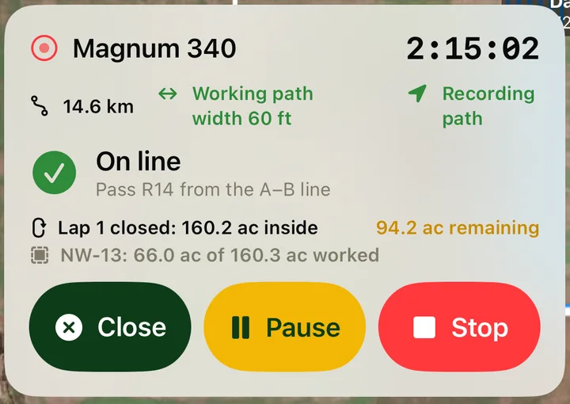

Work maps & guidance
AgSaver draws where you've been at the width of your implement, keeps count of the acres left inside the field as you go, and shows A–B lines with the pass you're on.

Watch the field fill in as you work
Open the map during a work session and your path is drawn on satellite imagery at the working width of the implement you're pulling, so you can see what's covered and what you missed.
- Satellite or standard map
- Path drawn at the implement's working width
- Your fields outlined underneath, with acres worked in each
- Time, distance and recording status at a glance

Know how much is left in the field
Working around a field? When you come back to where a lap started, AgSaver closes the lap and tells you the acres inside it and how many are still unworked. Every pass after that, back and forth or around, is counted off as you drive.
- Updated after every lap, working in or out
- Ground already worked isn't counted twice
- Headland turns are left out of the count
- Field progress shown as acres worked of the field total

Straight passes with A–B lines
Mark point A at one end of the field and point B at the other. AgSaver repeats the line every working width across the field and shows which pass you're on, numbered left and right of the A–B line, and how far you are from the centre of it.
- Lines spaced by your implement's working width
- Pass number and distance off line while you drive
- Set the lines once for the session

The whole farm on one map
The farm map shows every field with its name and acres, and the work done on it. Turn this year's and last year's work sessions on and off to compare, and see your crew's machines where they're working right now.
- Every field outlined and labelled with its acres
- Toggle this year's and last year's work
- Crew machines and paths shown live
- Also on the dashboard, with a pause button for the running session

More about mapping
Everything here works from the GPS in your iPhone or iPad.
Paths you can revisit
Every session keeps its GPS path. Open any one later to see exactly where the machine went.
Driving the edge
Drive around a field during a session and turn that lap into the field's boundary.
Crew on the map
In a crew, everyone's machines and current paths show on your map, updated about every 30 seconds.
GPX export
Every GPS path goes into the Export Everything zip as a GPX file for mapping software.
Field PDFs with work
Share a field on satellite imagery with its boundary and the work done on it.
Pauses aren't work
Paused time isn't added to the hour meter, so a lunch break never counts as hours on the machine.
More of what AgSaver does
Put every hour and every acre to work.
AgSaver runs on iPhone, iPad and Apple Watch. Your records stay on your devices and your own iCloud.
 Scan to download
Scan to download